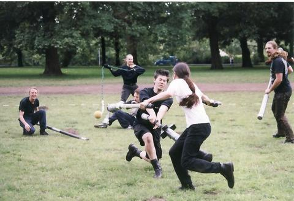

El jugger es una disciplina de equipo originado en Alemania entre los años 1989 y 1995, inspirado en la película "La sangre de los héroes" de 1989. Se trata de una actividad deportiva de equipo que combina elementos de rugby y esgrima.
El jugger se basa en la habilidad y la estrategia, no en la fuerza de los jugadores. El reglamento limita en todo momento los golpes fuertes y el contacto físico entre jugadores.
El jugger se basa en la mayor anotación de puntos en la base del equipo opuesto. La notación se consigue cuando el móvil, llamado Jugg, se introduce en la base. En la versión jugada en Australia y algunos lugares de Estados Unidos, el jugg presenta un aro o asa y es «clavado» en una estaca.
Solamente un jugador de cada equipo, el corredor, está autorizado para tocar físicamente el jugg. Solo puede tocar el jugg o móvil con sus manos. El resto de los jugadores portan los denominados pompfens —instrumentos con forma de arma recubiertos de material blando— y los utilizan para enfrentarse a los jugadores del equipo contrario y proteger a su corredor.

REGLAS DE JUEGO
Dinámica básica
El juego comienza después de que el árbitro dé la salida con la frase «¡Tres, dos, uno, jugger!».
Al comienzo del juego y tras cada anotación de un punto, el jugg se sitúa en el centro del campo de juego. Los jugadores se disponen en el fondo de cada campo, donde volverán tras cada notación.
El único que tiene permitido portar el jugg e introducirlo en la marca es el corredor, pudiendo golpearlo o lanzarlo con las manos exclusivamente. El resto de jugadores pueden hacer contacto con el jugg a través de sus armas, golpeándolo o arrastrándolo. Para que la anotación de un punto sea válida, el jugg debe permanecer dentro de la marca después de ser soltada por el corredor.
Fuera de juego
Cualquier jugador que entre en contacto con las líneas del campo o toque con cualquier parte de su cuerpo fuera del campo, será considerado bloqueado.
El jugg no podrá ser lanzado fuera del campo y si saliese fuera, un árbitro lo colocará en la banda a la altura del punto por el cual salió o el corredor podrá salir a recoger el móvil.
Los bloqueos
Los impactos se efectúan cuando un jugador toca a otro jugador con su arma, dentro de las normas del reglamento. Cuando esto se dé el jugador será bloqueado y permanecerá arrodillado con una rodilla en el suelo sin poder intervenir en el juego, el bloqueo será de cinco piedras o intervalos acústicos. El impacto de una cadena o kette bloquea ocho intervalos o piedras.
Si dos jugadores se tocan con sus armas de manera simultánea, los dos quedan bloqueados.
Para que un toque sea un bloqueo, el arma debe alcanzar al oponente en una zona válida. Las zonas válidas de tocado son todo el cuerpo a excepción del cuello, cabeza y las manos.
El pineo
Se puede pinear a un jugador bloqueado para prolongar su tiempo de bloqueo. Para ello un jugador deberá colocar su arma sobre una zona válida del cuerpo del jugador arrodillado. El pineo se prolongará indefinidamente hasta que el jugador retire su arma del jugador bloqueado.
Lucha entre corredores
En el caso de que los corredores se enfrentasen entre sí, pueden luchar solamente con agarres desde la clavícula a la cadera. Generalmente el objetivo de un corredor será sacar fuera del campo a su oponente para que este sufra un bloqueo al tocar fuera, o sea impactado por un jugador.
Esta lucha solo podrá darse entre corredores, el resto de jugadores solo puede entrar en contacto con el resto empleando sus armas.
Arbitraje
Dada la complejidad del juego, los partidos de jugger son guiados por cuatro árbitros. Dos de ellos, el árbitro principal y el árbitro secundario, recorren las líneas laterales y vigilan el cumplimiento de las reglas. Los dos árbitros restantes, los árbitros de base, vigilan las marcas y controlan si los puntos son convertidos de acuerdo al reglamento, cuando es el caso, son ellos los encargados de declararlo como válido.
Penalizaciones
Originalmente no se preveían penalizaciones en el jugger. Cuando se cometía una infracción del reglamento, el árbitro lo notificaba y se retomaba el juego en la última jugada válida.
En 2007, el Jugger e. V. de Berlín modificó el reglamento para todos los torneos que se disputan en dicha ciudad, incluido el Campeonato Alemán. Se introdujeron las siguientes penalizaciones:
1. Paso de la pelota al equipo contrario.
2. Amonestación:
-a. Cuando un jugador vuelve al juego antes de que termine su bloqueo.
-b. Cuando un jugador, al principio de una jugada, cruza la línea de fondo antes de que el árbitro libere el juego.
-c. Cuando un jugador tira el móvil fuera del campo a propósito.
3. Expulsión por el resto del tiempo actual: cuando un jugador ejerce violencia o ataca verbalmente al oponente.
4. Puntos para el oponente: cuando un equipo acumula tres amonestaciones.